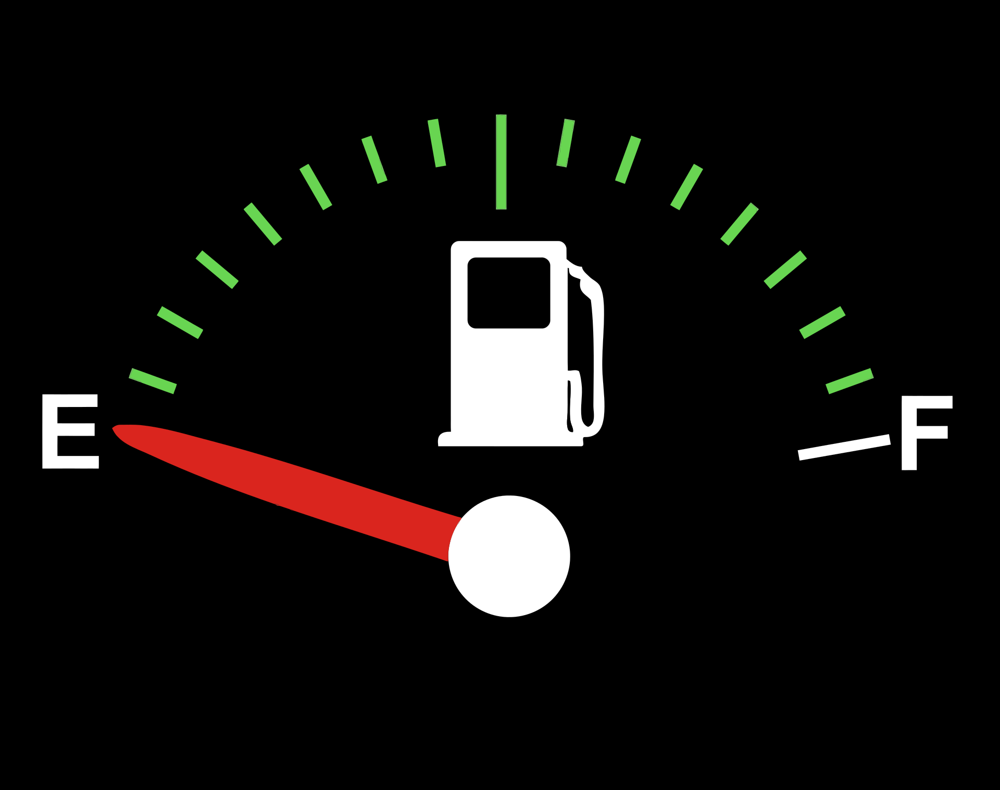
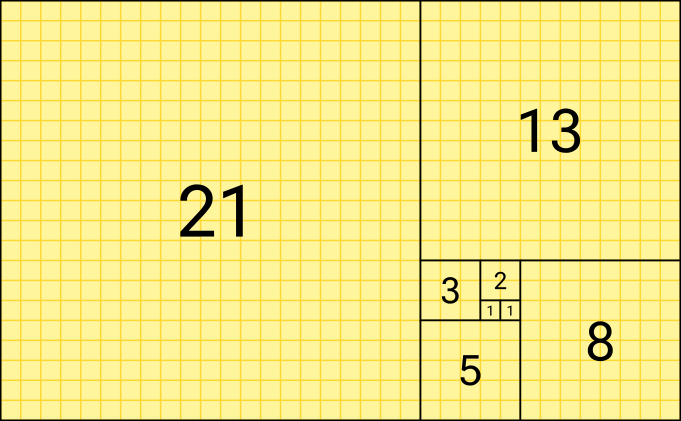
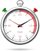
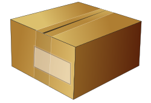

I Problemi
Cosa rende un problema facile o difficile? Strategie risolutive ed efficienza, con l'esempio dei numeri primi.
Un percorso interattivo su problem solving, algoritmi, diagrammi a blocchi (flow chart) e cicli — con simulatori, giochi e verifiche.
Cosa rende un problema facile o difficile? Strategie risolutive ed efficienza, con l'esempio dei numeri primi.
Dal papiro di Ahmes ad Al-Khwarizmi: definizione, pseudocodifica, variabili e tracciamento passo-passo.
I quattro blocchi, operatori aritmetici, relazionali e logici. Tavole di verità interattive.
Indice, iterazione, do-while e while-do: simulatore passo-passo di un ciclo reale.
Dalla teoria alla pratica: variabili, cicli, funzioni, puntatori, array, vettori e strutture nella programmazione procedurale in C++.
Classi, oggetti, incapsulamento, costruttori, modificatori di accesso ed ereditarietà: gli stessi concetti, ora organizzati a oggetti.
Attività di ruolo, memory delle forme, riordino della pizza margherita e generatore di gruppi.
Quiz interattivi con correzione immediata, per categoria, più versione stampabile per la verifica in classe.
Esercizi svolti e da svolgere, con soluzioni nascoste da rivelare quando vuoi.
In ogni ambito della vita dobbiamo risolvere problemi, eseguire compiti e prendere decisioni. Anche dividere il conto "alla romana" con gli amici al ristorante è un problema da risolvere.
Alcuni problemi sono semplici: li abbiamo già affrontati e li risolviamo con l'esperienza o l'aiuto di qualcuno. Altri sono difficili: la soluzione non è immediata, magari perché mancano dati o conoscenze.

Per risolvere questo problema servono dati: cilindrata, velocità, tipo di carburante, grandezza del serbatoio. Senza questi dati il problema non si può risolvere, anche conoscendo il "metodo".

Definizione: la sequenza di Fibonacci è una successione di numeri interi i cui primi due numeri sono 1 e 1; ogni altro elemento è la somma dei due termini precedenti.
Qui il problema è diverso dal precedente: abbiamo il dato (quanti elementi vogliamo) ma mancava la conoscenza (la definizione della sequenza).
Curiosità: il rapporto fra due termini successivi della sequenza si avvicina alla sezione aurea, un rapporto che si ritrova spesso in natura, nell'arte e nell'architettura.
I problemi non sono tutti uguali per tipologia né per complessità. Calcolare la distanza fra due punti è relativamente facile; calcolare la distanza Terra-Sole in un certo giorno dell'anno è relativamente difficile.
Perché "relativamente"? Perché la difficoltà dipende anche da chi deve risolvere il problema:
Per i problemi difficili serve: 1) comprendere bene il problema (analisi), 2) individuare una strategia risolutiva, cioè l'idea con cui — sfruttando esperienza, intuito, fantasia e intelligenza — si trova la "chiave" della soluzione.
Il valore assoluto di un numero x è: x stesso se x è non negativo, -x se x è negativo.
Esistono più strategie equivalenti:
Se il numero è negativo, cambio segno. Se è positivo, lo lascio invariato.
Elevo il numero al quadrato, poi calcolo la radice quadrata del risultato.
Attenzione: non esiste un'unica soluzione, ma alcune sono più efficienti di altre. Quando una soluzione è più efficiente di un'altra?

Un numero è primo quando è divisibile solo per 1 e per se stesso. Confrontiamo due strategie per scoprirlo:
Definizione: con efficienza di una strategia risolutiva si intende la sua capacità di utilizzare meno risorse informatiche possibili, in termini di tempo (e uso della CPU) e di memoria.
Trovata la strategia risolutiva, bisogna scrivere la sequenza delle singole istruzioni in modo formale e preciso.
Si definisce algoritmo la sequenza delle singole istruzioni, scritte in modo formale e preciso, che si devono seguire per risolvere un problema.
In pratica un algoritmo è una "ricetta": come una ricetta di cucina elenca gli ingredienti e i passaggi per ottenere un piatto, un algoritmo elenca i dati e i passaggi per ottenere un risultato. Anche le istruzioni di montaggio di un mobile, le indicazioni di un navigatore GPS o la procedura per cambiare una ruota forata sono algoritmi: qualunque procedura passo-passo, precisa e ripetibile, che porta a un risultato.
Non basta però scrivere una qualsiasi sequenza di istruzioni perché sia un buon algoritmo: devono essere rispettate alcune caratteristiche precise, che vediamo qui sotto.
Perché una sequenza di istruzioni sia davvero un algoritmo — e non solo un elenco confuso di operazioni — deve rispettare queste caratteristiche:
Deve terminare dopo un numero finito di passi, in un tempo ragionevole. Un procedimento che continua all'infinito, senza mai arrivare a una conclusione, non è un algoritmo valido.
Esempio: "continua a suonare il citofono finché non ti aprono" non è finito, se nessuno risponde mai! Serve un limite, es. "suona al massimo 3 volte, poi rinuncia".
Ogni istruzione deve avere un solo significato, chiaro e preciso: chi (o cosa) la esegue non deve avere dubbi su cosa fare.
Esempio: "cuoci finché non ti sembra pronto" è ambiguo, perché dipende da chi giudica; "cuoci per 9 minuti" no.
Ogni singola istruzione deve poter essere eseguita realmente da chi (o cosa) esegue l'algoritmo, con le risorse a disposizione.
Esempio: "dividi il numero per zero" oppure "svuota una piscina con un cucchiaino" non sono istruzioni eseguibili.
Le istruzioni si eseguono una alla volta, in un ordine ben preciso stabilito dall'algoritmo (salvo salti espliciti, come nelle decisioni e nei cicli).
Esempio: non puoi "condire la pizza" prima di "stendere l'impasto": l'ordine conta.
Deve risolvere non un solo caso specifico, ma tutti i casi possibili dello stesso tipo di problema: i dati possono cambiare, il procedimento resta valido.
Esempio: lo vedremo tra poco con l'esempio della telefonata, dove un buon algoritmo deve prevedere anche il caso in cui Alice non risponda, non solo quello "fortunato".
Tra più algoritmi corretti che risolvono lo stesso problema, alcuni usano meno risorse (tempo/CPU e memoria) di altri: l'efficienza misura questa "economia" di risorse.
Esempio: lo ritroveremo più avanti in questa sezione, confrontando la selezione binaria e quella unaria per il calcolo del valore assoluto.
Un algoritmo riceve zero o più dati in ingresso (input) e produce almeno un risultato in uscita (output): altrimenti non servirebbe a nulla.
Esempio: l'algoritmo del valore assoluto riceve in input un numero n e restituisce in output ris.
La parola algoritmo deriva dal nome di questo matematico, astronomo e geografo persiano, considerato il padre dell'algebra.
")
Il primo algoritmo documentato: oltre 3.500 anni fa, conteneva tabelle di frazioni e 84 problemi aritmetici, algebrici e geometrici con relative soluzioni.
Scriviamo l'algoritmo che Bob deve seguire per telefonare ad Alice:
⚠️ Problema: e se Alice non risponde? Questa versione non contempla tutte le possibilità!
Versione corretta e generalizzata:
Un algoritmo deve essere il più generalizzabile possibile: deve contemplare tutte le casistiche, non solo il caso "fortunato". La stessa idea si può codificare con parole o sequenze diverse: la codifica non è univoca.
Scrivi la procedura per preparare e cuocere una pizza margherita, indicando ogni singola operazione, una per riga.
👉 Puoi mettere alla prova la tua memoria con il gioco "Riordina la ricetta" nella sezione .
Per ciascuna delle seguenti "non-istruzioni", individua quale caratteristica di un algoritmo viene violata, poi controlla la soluzione.
1. "Continua a far rimbalzare la palla contro il muro, senza mai fermarti."
Manca la finitezza: un algoritmo deve terminare dopo un numero finito di passi. Qui non c'è nessuna condizione di arresto: è un ciclo infinito.
2. "Cuoci la pasta finché non ti sembra pronta."
Manca la non ambiguità: "ti sembra pronta" è un giudizio soggettivo, non preciso. Un'istruzione corretta sarebbe, ad esempio, "cuoci per 9 minuti".
3. "Dividi il numero per zero e scrivi il risultato."
Manca l'eseguibilità: la divisione per zero non è un'operazione definita/eseguibile, quindi l'istruzione non può essere portata a termine.
4. "Per sommare due numeri qualsiasi, fai 3 + 5."
Manca la generalità: l'algoritmo funziona solo per quei due numeri specifici, non per una coppia qualsiasi come richiesto dal problema — esattamente come nell'esempio della telefonata, deve valere per ogni caso, non solo per quello "fortunato".
Descrivere un algoritmo in linguaggio naturale (comprensibile all'uomo) si chiama pseudocodifica. Scrivere l'algoritmo in un linguaggio comprensibile al computer si chiama codifica, e può avvenire in linguaggi di programmazione diversi.
Dato un numero n
Se n > 0
il risultato è n
Altrimenti (se n < 0)
il risultato è n * (-1)
#include <stdio.h>
int main() {
int n, ris;
scanf("%d", &n);
if (n > 0) {
ris = n;
} else {
ris = n * (-1);
}
printf("%d", ris);
return 0;
}
#include <iostream>
using namespace std;
int main() {
int n, ris;
cin >> n;
if (n > 0) {
ris = n;
} else {
ris = n * (-1);
}
cout << ris;
return 0;
}
n = int(input())
if n > 0:
ris = n
else:
ris = n * (-1)
print(ris)
Tutte queste codifiche fanno la stessa cosa! Cambia il linguaggio, non l'idea.

Le variabili sono contenitori che permettono di memorizzare dati: senza dati non può esistere elaborazione. Possiamo immaginarle come scatole a disposizione del programmatore, ciascuna con un nome (identificatore) univoco ed evocativo (es. num, ris, div). Non c'è nessun vincolo formale sul nome, ma un buon nome rende il codice comprensibile.
⚠️ Una variabile occupa spazio in memoria (di più o di meno a seconda del tipo e della dimensione), e viene salvata nella RAM, la memoria che contiene i dati necessari al programma durante l'esecuzione.
Vediamo cosa succede alle variabili istruzione per istruzione. Confrontiamo due versioni: quella con la selezione binaria (due variabili, n e ris) e quella ottimizzata con la selezione unaria (una sola variabile, n).
-1 usato nel calcolo non è contenuto in nessuna variabile: è una costante, una porzione di memoria il cui valore non cambia durante l'esecuzione.n invece di crearne una nuova (ris), risparmia memoria: è un esempio concreto di efficienza.Il Flow Chart (diagramma di flusso, diagramma a blocchi) è il modo più semplice e diffuso per rappresentare graficamente un algoritmo. È una rappresentazione intuitiva che permette di individuare "a colpo d'occhio" la struttura dell'algoritmo.
È come la cartina di un percorso: invece di descrivere a parole "vai dritto, poi al bivio scegli in base a una condizione...", il flow chart lo disegna. Ogni forma geometrica ha un significato preciso e convenzionale (uguale in tutto il mondo, indipendentemente dalla lingua o dal linguaggio di programmazione che si userà poi): per questo un flow chart si può tradurre in pseudocodice o in un qualsiasi linguaggio (C, C++, Python...) senza perdere informazioni.
Inizio / Fine — forma ovale, senza spigoli. Usato solo come primo e ultimo blocco dell'algoritmo.
Input / Output — parallelogramma. Comunica informazioni all'utente o riceve dati (lettura/scrittura).
Elaborazione — rettangolo. Contiene istruzioni che trasformano i dati (calcoli, assegnamenti).
Decisione — rombo. Contiene un confronto (test) che dà solo due esiti: Vero / Falso.
I blocchi si collegano con frecce (indicano il verso di percorrenza) e nodi di congiunzione (dove due percorsi alternativi si ricongiungono).
Non basta usare le forme giuste: perché un flow chart sia davvero corretto e leggibile deve rispettare alcune regole precise, in gran parte legate alle caratteristiche di un algoritmo viste nella sezione .
Deve esserci un solo blocco Inizio, punto di partenza univoco da cui parte tutto il diagramma.
Esempio: due frecce che partono da due "Inizio" diversi e poi si uniscono non sono ammesse: da dove si comincia davvero?
Da qualunque blocco si parta, seguendo le frecce si deve sempre raggiungere un blocco Fine dopo un numero finito di passi: è la finitezza dell'algoritmo, resa visibile nel disegno.
Esempio: un ramo di un ciclo che torna indietro all'infinito, senza mai poter uscire verso Fine, rappresenta un errore (ciclo infinito).
Da ogni rombo devono partire esattamente due frecce, etichettate V e F: non ne può mancare una, né essercene una terza.
Esempio: un rombo con tre frecce in uscita ("Vero", "Falso", "forse") non è un blocco di decisione valido.
Ogni blocco (tranne Inizio) deve avere almeno una freccia in entrata, ed ogni blocco (tranne Fine) deve avere almeno una freccia in uscita: niente parti isolate che non si raggiungono mai, niente blocchi da cui non si può proseguire.
Esempio: un blocco di elaborazione disegnato "a lato" senza alcuna freccia che lo colleghi al resto non fa parte dell'algoritmo.
Ogni blocco di elaborazione dovrebbe contenere una sola operazione elementare (o un piccolo gruppo coerente), non un intero paragrafo di istruzioni: aiuta a tracciare il diagramma passo-passo, come nel simulatore di tracciamento.
Esempio: meglio due blocchi separati ris = n * 2 e ris = ris + 1 che un unico blocco con dentro tutto il procedimento.
Per convenzione il flusso principale scende dall'alto verso il basso; le frecce non dovrebbero incrociarsi inutilmente. I rami che "tornano indietro" (i cicli) sono l'eccezione e vanno segnalati chiaramente, ad es. con una freccia verso l'alto.
Esempio: lo vedremo tra poco nei cicli while/do-while/for, dove una freccia risale al blocco di controllo della condizione.
Ogni descrizione qui sotto corrisponde a un flow chart scorretto: individua quale regola viene violata, poi controlla la soluzione.
1. Il diagramma ha due blocchi ovali "Inizio", uno in alto a sinistra e uno in alto a destra, che poi confluiscono con delle frecce verso lo stesso blocco di elaborazione.
Viola la regola dell'Inizio unico: un flow chart deve avere un solo punto di partenza univoco, non due.
2. Un rombo con dentro la condizione "voto >= 6 ?" ha tre frecce in uscita: una etichettata "V", una "F" e una senza etichetta che va dritta a un blocco di output.
Viola la regola delle due sole uscite etichettate V/F: da un blocco di decisione possono uscire esattamente due frecce, entrambe etichettate.
3. Un blocco di elaborazione "tot = tot + n" ha una freccia in entrata, ma nessuna freccia in uscita: il percorso si interrompe lì.
Viola la regola del vicolo cieco: ogni blocco (tranne Fine) deve avere una freccia in uscita che porti, prima o poi, a un blocco Fine.
4. Nel ciclo while per stampare i numeri da 1 a 5, il ramo "Vero" del rombo esegue output(i) e poi torna direttamente al controllo della condizione, senza mai eseguire i = i + 1.
Viola la finitezza (raggiungibilità del Fine): la condizione i <= 5 resterà sempre vera, generando un ciclo infinito che non arriva mai al blocco Fine.
Per assegnare un valore a una variabile si usa l'operatore =. Quando all'inizio dell'algoritmo si assegna un primo valore a una variabile si parla di inizializzazione.
⚠️ Errore comune: se non inizializzo cont prima di incrementarlo, l'algoritmo non sa a che valore sommare 1!
Operatori base: + - * /. Esiste anche l'operatore modulo %, che restituisce il resto della divisione intera tra due numeri (es. 20 % 3 = 2, perché 20 diviso 3 fa 6 con resto 2).
Esercizio: Rappresenta l'algoritmo per calcolare il doppio di un numero ricevuto in input.
Per confrontare due valori si usa l'operatore == (uguale a). Attenzione a non confonderlo con l'assegnamento =! Altri operatori: > < >= <= !=.
Esercizio: verifica se un numero inserito in input è pari.
Indica sempre l'etichetta V/F sulle frecce di selezione!
Esercizio: calcola il valore assoluto di un numero, con selezione binaria.
n++ equivale a n = n + 1 (incremento). n-- equivale a n = n - 1 (decremento).
Esercizio: qual è l'output del seguente flow chart? n = 4 → n = n+1 → n = n*n → n = n-1 → output(n)
NOT (!) nega una condizione. AND (&&) è vero solo se entrambe le condizioni sono vere. OR (||) è vero se almeno una condizione è vera.
| A | B | !A | A && B | A || B |
|---|---|---|---|---|
| F | F | V | F | F |
| F | V | V | F | V |
| V | F | F | F | V |
| V | V | F | V | V |
Esempio divertente: quale musicista è chitarrista E ha i capelli lunghi (AND)? Quale è chitarrista O ha i capelli lunghi (OR)?
| Musicista | Chitarrista | Capelli lunghi |
|---|---|---|
| John | Vero | Vero |
| Dave | Vero | Falso |
| Gregg | Falso | Vero |
| Justin | Falso | Falso |
Con AND solo John soddisfa entrambe le condizioni. Con OR, John, Dave e Gregg soddisfano almeno una condizione.
Esercizio: stabilisci se un numero ricevuto in input è compreso tra 10 e 20 (estremi compresi).
Nei quattro blocchi di base non esiste una forma speciale per la "ripetizione": un ciclo (loop) si costruisce combinando un blocco di decisione con un percorso che, se la condizione lo permette, ritorna a un punto precedente dell'algoritmo invece di proseguire verso la fine.
Esistono tre modi equivalenti — ma con differenze importanti — per costruire questa struttura:
La condizione si controlla prima di ogni iterazione. Se è falsa da subito, il corpo del ciclo non viene mai eseguito.
La condizione si controlla dopo ogni iterazione. Il corpo del ciclo viene eseguito sempre almeno una volta.
Caso particolare del while: pensato per i cicli in cui si conosce già quante volte ripetere, racchiude in un solo punto inizializzazione, condizione e incremento.
Pseudocodice:
i = 1
finché i <= 5
stampa i
i = i + 1
C++:
int i = 1;
while (i <= 5) {
cout << i << endl;
i++;
}
⚠️ Se scordo i = i + 1, la condizione i <= 5 resterà sempre vera: è un ciclo infinito!
Con il do-while il corpo viene eseguito prima di controllare la condizione: è utile quando l'istruzione va comunque fatta almeno una volta, ad esempio per leggere un dato dall'utente.
Pseudocodice:
ripeti
leggi n
finché n > 0
C++:
int n;
do {
cin >> n;
} while (n <= 0);
Con il while classico, se la prima condizione fosse già falsa, l'input non verrebbe mai richiesto. Con il do-while, la richiesta avviene sempre almeno una volta.
Il for è un ciclo "a contatore": si usa quando si conosce già quante iterazioni servono. È equivalente a un while, ma inizializzazione, condizione e incremento sono scritte in un'unica intestazione.
Pseudocodice:
leggi N
somma = 0
per i da 1 a N
somma = somma + i
stampa somma
C++:
int N, somma = 0;
cin >> N;
for (int i = 1; i <= N; i++) {
somma = somma + i;
}
cout << somma;
i = 1 (inizializzazione), i <= N (condizione) e i++ (incremento) sono esattamente le stesse operazioni del ciclo while: il for le raccoglie solo in un unico punto, rendendo il codice più compatto e più difficile da "scordare" (ad es. non si rischia di dimenticare l'incremento).Esercizio: disegna il flow chart e scrivi il codice C++ per calcolare la media di N numeri inseriti dall'utente (usa un ciclo for).
int N, somma = 0;
cin >> N;
for (int i = 1; i <= N; i++) {
int n;
cin >> n;
somma = somma + n;
}
cout << (double)somma / N;
Quando in un algoritmo bisogna ripetere la stessa azione più volte, si usa un ciclo (loop). Serve una variabile, di solito chiamata indice, e una condizione che stabilisce se entrare (o rientrare) nel ciclo. Ogni volta che si entra nel ciclo si compie una iterazione.
Osserviamo un flow chart che stampa "ciao" finché l'indice i è minore di 3, poi stampa "arrivederci":
Le iterazioni sono "scandite" dal cambio di valore dell'indice. Quando i arriva a 3, la condizione i < 3 diventa falsa: si esce dal ciclo.
Il controllo della condizione avviene in coda all'iterazione.
L'iterazione viene sempre eseguita almeno una volta.
Il controllo della condizione avviene in testa all'iterazione.
Non è detto che venga mai eseguita.
Proviamo con una condizione che è falsa fin dall'inizio: qual è la differenza tra le due strutture?
Si definisce programmazione procedurale lo stile di programmazione in cui il codice è organizzato come una sequenza di istruzioni eseguite in ordine, raggruppate in procedure (in C++ chiamate funzioni) che possono essere richiamate più volte.
È l'applicazione diretta di tutto ciò che abbiamo visto finora: un algoritmo, scritto in pseudocodice o rappresentato con un flow chart, viene codificato in C++ traducendo blocco per blocco: elaborazioni, input/output, decisioni e cicli. Ogni blocco del flow chart ha un corrispondente diretto in C++: il rettangolo di elaborazione diventa un'istruzione di assegnamento, il rombo di decisione diventa un if, il ciclo diventa un while/for, e così via — lo vedremo passo passo in questa sezione.
Nella programmazione procedurale i dati (variabili, array, strutture) e le operazioni che li elaborano (le funzioni) restano concettualmente separati: sono le funzioni a "prendere in mano" i dati e trasformarli, passo dopo passo. Questo la distingue dalla programmazione a oggetti (OOP), dove dati e comportamenti vengono invece racchiusi insieme dentro le classi — vedi la sezione .
🎓 Per chi guida la lezione: è utile far notare fin da subito che il codice C++ non viene eseguito direttamente. Un programma chiamato compilatore legge il file sorgente (es. main.cpp) e lo traduce in linguaggio macchina, producendo un file eseguibile (su Windows, .exe). Se il codice contiene un errore di sintassi (es. un punto e virgola dimenticato, una parentesi non chiusa), la compilazione fallisce e il programma non parte nemmeno: il compilatore segnala la riga incriminata. Questo è molto diverso da un errore logico (il programma compila e gira, ma dà un risultato sbagliato) — distinguere le due categorie di errore aiuta molto gli studenti a "debuggare" con metodo.
Ogni programma C++ parte da una struttura fissa. Vediamola su un primo esempio pratico:
#include <iostream>
int main()
{
int eta;
eta = 25;
int eta_padre = 50; // inizializzazione: dichiarazione + primo valore insieme
std::cout << "Ciao, ho 25 anni" << std::endl;
std::cout << "ho 25 anni da maggio" << std::endl;
return 0; // 0 = il programma è terminato senza errori
}
#include <iostream>: importa la libreria standard che fornisce std::cout (output) e std::cin (input). Senza questa riga, il compilatore non saprebbe nemmeno cosa sia cout.int main(): è il punto di ingresso del programma: l'esecuzione parte sempre da qui, istruzione dopo istruzione, dall'alto verso il basso. Ogni programma C++ ha esattamente una funzione main.std::cout << ... << std::endl;: stampa a video il contenuto a destra di <<; std::endl va a capo. Si possono concatenare più valori con più << sulla stessa riga.return 0;: chiude la funzione main restituendo al sistema operativo un codice (0 = tutto ok, un valore diverso da 0 segnala convenzionalmente un errore).Alcuni dettagli "sintattici" che sembrano piccoli, ma che per chi inizia sono la fonte più comune di errori di compilazione:
; chiude ogni singola istruzione (una dichiarazione, un assegnamento, una chiamata a funzione...). Dimenticarlo è probabilmente l'errore più frequente in assoluto per chi comincia.{ } delimitano un blocco di istruzioni, cioè un insieme di righe che il linguaggio tratta come un'unica unità (il corpo di main, di un if, di un ciclo...).main e Main sono due nomi completamente diversi, così come eta ed Eta.// commento su una riga oppure /* commento su più righe */ — vengono ignorati dal compilatore: servono solo a chi legge il codice (compreso l'autore stesso, mesi dopo!). Non sostituiscono nomi di variabili chiari, ma li completano.Il prefisso std:: indica che cout/endl appartengono al namespace standard della libreria (un "spazio dei nomi" che evita conflitti fra nomi definiti da librerie diverse). In alternativa si può scrivere una volta sola using namespace std; subito dopo gli #include, e poi usare cout ed endl senza prefisso in tutto il file.
Come visto in generale nella sezione , le variabili sono contenitori di dati. In C++ ogni variabile ha un tipo, che determina che valori può contenere e quanto spazio occupa in memoria:
| Tipo | Contiene | Esempio |
|---|---|---|
int | numeri interi | int eta = 25; |
float | numeri con la virgola (precisione singola) | float altezza = 1.78f; |
double | numeri con la virgola (precisione doppia) | double altezza = 1.78; |
char | un singolo carattere | char sesso = 'M'; |
bool | vero/falso | bool isOnline = true; |
string | una sequenza di caratteri (testo) | string nome = "Mario"; |
#include <iostream>
#include <string>
using std::string;
int main()
{
double eta = 28.5;
char sesso = 'M';
bool isOnline = true;
string nome = "Mario";
std::cout << "Ciao, mi chiamo " << nome
<< " e ho " << eta << " anni" << std::endl;
return 0;
}
using std::string; permette di scrivere string invece di std::string ogni volta, senza importare l'intero namespace std come farebbe using namespace std;.
⚠️ Attenzione al troncamento: int x = 10.3; è sintatticamente valido, ma x memorizzerà 10! Assegnare un valore "più preciso" (double) a un contenitore "meno preciso" (int) fa perdere la parte decimale, senza generare un errore di compilazione (al massimo un avviso/warning) — per questo è un bug subdolo, facile da non notare.
float vs double: qual è la differenza?Entrambi memorizzano numeri con la virgola (in gergo, numeri in virgola mobile), ma non sono la stessa cosa: differiscono per quanto spazio occupano in memoria e, di conseguenza, per quanto sono precisi.
| Tipo | Spazio in memoria | Cifre decimali affidabili |
|---|---|---|
float | 4 byte (precisione singola) | circa 6-7 |
double | 8 byte (precisione doppia — il doppio di float, da cui il nome) | circa 15-16 |
In C++, un letterale decimale scritto senza suffisso (es. 3.99) è per default di tipo double: per assegnarlo a un float serve il suffisso f (es. 3.99f), altrimenti il compilatore lo converte implicitamente da double a float (con un possibile avviso di perdita di precisione).
🎓 Quale usare in pratica? Nella programmazione "normale" (non specializzata in grafica 3D, calcolo scientifico su grandi volumi di dati o sistemi embedded con memoria molto limitata) si usa quasi sempre double: la differenza di 4 byte per variabile è irrilevante sull'hardware moderno, mentre la precisione maggiore evita errori di arrotondamento fastidiosi nei calcoli. float ha senso quando si devono gestire enormi quantità di numeri decimali (es. milioni di vertici in un motore grafico) e il risparmio di memoria diventa significativo.
int si scrive da solo, ma string ha bisogno di std::?Guardando gli esempi sopra, sorge una domanda naturale: perché scriviamo semplicemente int, float, double, char, bool, ma per il testo dobbiamo scrivere std::string (o, dopo un using std::string;, almeno includere <string>)? La risposta è che int, float, double, char e bool non sono la stessa "categoria di cosa" di string:
Tipi primitivi (o fondamentali): fanno parte del nucleo del linguaggio C++ stesso, esattamente come le parole chiave if o while. Il compilatore li conosce "di fabbrica": non servono #include né prefissi di namespace, perché non appartengono a nessuna libreria — sono il linguaggio.
Non è un tipo primitivo: è una class, cioè un tipo di dato definito nella libreria standard del C++ (la stessa libreria che fornisce anche cout, cin e vector), non incorporato nel linguaggio. Per questo va prima importata con #include <string>, e per questo vive dentro il namespace std insieme a tutto il resto della libreria standard — da cui std::string.
In altre parole, quando scriviamo string nome = "Mario"; stiamo già, senza saperlo, creando un oggetto: un'istanza della classe string, che "sotto al cofano" incapsula al suo interno la sequenza di caratteri e mette a disposizione dei metodi per manipolarla (li vedremo più avanti in questa sezione: .length(), .find(), .substr()...). Il fatto che si possa dichiarare e usare in modo così simile a un int è voluto: i progettisti del C++ hanno costruito string apposta per "sembrare" un tipo built-in, anche se tecnicamente è una classe come quelle che scriveremo noi stessi nella sezione .
🎓 Stesso identico motivo per cout e cin: anche loro non sono parole chiave del linguaggio, ma oggetti definiti nella libreria standard (dentro <iostream>) — per questo si scrivono std::cout e std::cin, con lo stesso prefisso std:: di std::string. La regola generale, valida in tutto C++, è: "fa parte del linguaggio stesso" → nessun prefisso (come int, if, for); "lo fornisce la libreria standard" → richiede std:: (o un using che lo renda implicito), come string, cout, cin, vector.
È importante distinguere con precisione tre concetti che si assomigliano:
int eta;
Crea la variabile e le riserva spazio in memoria, ma non le assegna ancora un valore utile: contiene "spazzatura" (un valore residuo casuale già presente in quella cella di memoria).
eta = 25;
Scrive (o sovrascrive) un valore in una variabile che esiste già. Si può fare tante volte quante si vuole nel corso del programma.
int eta = 25;
Dichiarazione e primo assegnamento nella stessa istruzione. È buona pratica inizializzare sempre una variabile quando la si dichiara, per evitare di leggerla per errore prima di averle dato un valore.
_), ma non possono iniziare con una cifra (2voti non è valido, voti2 sì).-, %, @.voto e Voto sono due variabili diverse.int, return, if, class...).numeroTentativi, calcolaMedia.⚠️ Occhio agli apici: un singolo carattere (char) si scrive fra apici singoli, 'M'; una stringa (string), anche se lunga un solo carattere, si scrive fra apici doppi, "M". Scambiarli è un errore di compilazione molto comune per chi inizia.
Quando un valore non deve mai essere modificato durante l'esecuzione (es. il valore di π, l'età massima ammessa in un modulo), si dichiara con la parola chiave const: qualunque tentativo di riassegnarlo in seguito diventa un errore di compilazione, non un bug silenzioso da scoprire a runtime.
const double PI = 3.14159; // attenzione al tipo: PI ha bisogno dei decimali, quindi double, non int! const int ETA_MASSIMA = 120; std::cout << "L'area di un cerchio si calcola con PI = " << PI << std::endl; // PI = 3.20; // ERRORE DI COMPILAZIONE: non si può riassegnare una costante
Per convenzione i nomi delle costanti si scrivono spesso in MAIUSCOLO_CON_UNDERSCORE (es. ETA_MASSIMA): non è una regola del compilatore, ma un modo per farle riconoscere a colpo d'occhio nel codice, distinguendole dalle variabili "normali".
Gli operatori aritmetici + - * / e l'operatore modulo % (resto della divisione intera) sono già stati introdotti nella sezione : in C++ si usano esattamente con la stessa sintassi.
int x = 10; int y = 6; int risultato = x % y; // resto della divisione intera 10 / 6 → risultato vale 4
Quando si vuole aggiornare una variabile combinando il suo valore attuale con un'operazione, invece di riscriverla due volte si può usare un operatore di assegnazione composta:
| Forma composta | Equivalente a |
|---|---|
eta += 5; | eta = eta + 5; |
eta -= 5; | eta = eta - 5; |
eta *= 2; | eta = eta * 2; |
eta /= 2; | eta = eta / 2; |
Un caso particolare, già incontrato nei cicli, è l'incremento (++) e il decremento (--) di 1: eta++; equivale a eta += 1;. Esistono però due varianti, che si comportano diversamente quando il risultato viene usato subito in un'altra espressione:
int eta = 20; eta += 5; // eta diventa 25 int a = ++eta; // PRE-incremento: eta diventa 26 PRIMA di essere letto → a vale 26 int b = eta++; // POST-incremento: b prende il valore ATTUALE (26) → POI eta diventa 27 std::cout << "a = " << a << std::endl; // 26 std::cout << "b = " << b << std::endl; // 26 std::cout << "eta finale = " << eta << std::endl; // 27
++etaIncrementa prima, poi restituisce il nuovo valore già aggiornato.
eta++Restituisce il valore attuale (non ancora aggiornato), e solo dopo incrementa la variabile.
Quando l'incremento è l'unica cosa scritta sulla riga (come i++; nell'intestazione di un for), la differenza fra pre e post non ha alcun effetto visibile: conta solo quando il risultato dell'incremento viene usato subito, come nell'esempio sopra.
boolGli operatori relazionali (== != > < >= <=) e logici (! && ||), già visti concettualmente nella sezione con le tavole di verità, in C++ producono sempre un valore di tipo bool: true oppure false. Nulla vieta di memorizzare questo risultato in una variabile bool, invece di usarlo subito dentro un if:
bool condizione1 = (10 != 11); // true bool condizione2 = (10 < 11) && (10 > 9); // true && true → true bool condizione3 = (10 > 11); // false std::cout << std::boolalpha; // da qui in poi stampa "true"/"false" invece di 1/0 std::cout << condizione1 << std::endl; // true std::cout << condizione2 << std::endl; // true std::cout << condizione3 << std::endl; // false
Senza std::boolalpha, cout stamperebbe i bool come numeri: 1 per true e 0 per false. Internamente, del resto, un bool è un numero (0 o 1): std::boolalpha serve solo a renderlo più leggibile a video.
🎓 Dettaglio utile da sapere: gli operatori && e || in C++ sono "a corto circuito" (short-circuit): in a && b, se a è già false, b non viene nemmeno valutato (il risultato è comunque false); allo stesso modo, in a || b, se a è già true, b non viene valutato. Non è solo un'ottimizzazione: è anche un meccanismo usato spesso di proposito, ad esempio per evitare di valutare un'espressione "pericolosa" quando la prima condizione la rende superflua.
Per scegliere fra due valori in base a una condizione, quando la scelta serve dentro un'espressione (es. per assegnare una variabile o per stampare direttamente un risultato), C++ offre una scorciatoia più compatta di un if/else completo: l'operatore ternario condizione ? valoreSeVero : valoreSeFalso.
int numero1 = 51; // 51 è dispari (51 % 2 vale 1, non 0), quindi la condizione è falsa string tipoNumero = (numero1 % 2 == 0) ? "pari" : "dispari"; std::cout << tipoNumero << std::endl; // dispari
È equivalente a scrivere:
string tipoNumero;
if (numero1 % 2 == 0) {
tipoNumero = "pari";
} else {
tipoNumero = "dispari";
}
⚠️ Il ternario funziona bene per assegnare un valore a una variabile o per produrre direttamente un output, ma non si può usare per eseguire un'istruzione di input come std::cin: per una logica che coinvolge la lettura di dati serve un if/else vero e proprio.
cin e coutPer leggere dati inseriti dall'utente da tastiera si usa std::cin >> variabile; (nota il verso delle frecce, opposto a quello di cout).
#include <iostream>
#include <string>
using std::string;
int main()
{
string nome, cognome;
int eta;
std::cout << "Scrivi il nome: ";
std::cin >> nome;
std::cout << "Scrivi il cognome: ";
std::cin >> cognome;
std::cout << "Scrivi l'età: ";
std::cin >> eta;
std::cout << "Ciao " << nome << " " << cognome
<< ", hai " << eta << " anni!" << std::endl;
return 0;
}
⚠️ std::cin >> variabile; legge una sola "parola": si ferma al primo spazio, tabulazione o "a capo". Se l'utente scrivesse un nome composto come "Anna Maria", cin >> nome leggerebbe solo "Anna", lasciando "Maria" in attesa di essere letto dalla prossima istruzione di input! Per leggere una riga intera, spazi compresi, si usa invece std::getline(std::cin, nome);.
Anche gli output si possono concatenare in un'unica istruzione, mettendo più << in fila come nell'esempio: il compilatore li esegue da sinistra a destra, uno dopo l'altro, sullo stesso flusso di output.
if / else e switchIl blocco di decisione del flow chart diventa in C++ un if (eventualmente con else), oppure — quando si confronta una stessa variabile con tanti valori possibili — uno switch:
int x = 10, y = 11;
if (x > y) {
std::cout << "x è maggiore di y" << std::endl;
} else {
std::cout << "x non è maggiore di y" << std::endl;
}
int giorno;
std::cin >> giorno;
switch (giorno) {
case 1:
std::cout << "Lunedì" << std::endl;
break;
case 2:
std::cout << "Martedì" << std::endl;
break;
// ... casi 3-7 ...
default:
std::cout << "Numero non valido" << std::endl;
break;
}
⚠️ L'errore più insidioso della selezione: confondere l'operatore di confronto == con quello di assegnamento =. Scrivere if (x = 5) invece di if (x == 5) è sintatticamente valido (!): assegna 5 a x e poi valuta il risultato dell'assegnamento (5, che C++ considera "vero" perché diverso da zero) — quindi quell'if risulterà sempre vero, qualunque fosse il valore originale di x, che nel frattempo è stato silenziosamente sovrascritto. È un bug classico, difficile da individuare a occhio perché il codice "sembra giusto".
Le parentesi graffe { } dopo un if sono obbligatorie solo se il blocco contiene più di un'istruzione: con una singola istruzione si possono omettere. È comunque buona norma metterle sempre: se in futuro si aggiunge una seconda riga dimenticando di aggiungere le graffe, quella riga finirebbe per essere eseguita sempre, indipendentemente dalla condizione, generando un bug molto difficile da individuare.
Ogni case dovrebbe terminare con break;, altrimenti l'esecuzione "cade" nel case successivo (comportamento chiamato fall-through): dimenticarlo per errore è un bug comune. Lo stesso comportamento, però, può essere usato di proposito per raggruppare più casi che devono eseguire lo stesso codice, semplicemente non mettendo istruzioni fra un case e l'altro:
int giorno;
std::cin >> giorno;
switch (giorno) {
case 1:
case 2:
case 3:
case 4:
case 5:
std::cout << "vai a lavorare" << std::endl; // eseguito per 1, 2, 3, 4 o 5
break;
case 6:
case 7:
std::cout << "vai a divertirti" << std::endl; // eseguito per 6 o 7
break;
default:
std::cout << "Il numero inserito non rappresenta un giorno della settimana" << std::endl;
break;
}
Qui i case 1...case 5 non hanno un break fra loro: "cadono" tutti nello stesso blocco di codice, che viene eseguito una sola volta indipendentemente da quale dei cinque valori sia stato inserito. È lo stesso meccanismo di prima (il fall-through), ma usato consapevolmente come strumento, non subito come errore.
while, do-while, forRitroviamo qui, in sintassi C++, le tre strutture di ripetizione già viste nella sezione .
int count = 1; // variabile contatore
while (count <= 5) {
std::cout << count << std::endl;
count++; // fondamentale: senza incremento il ciclo è infinito
}
⚠️ Se si dimenticasse count++;, la condizione count <= 5 resterebbe sempre vera e il programma entrerebbe in un ciclo infinito, restando "bloccato" per sempre (fino a essere interrotto a forza dall'utente).
int count = 1;
do {
std::cout << count << std::endl;
count++;
} while (count <= 5);
Come una persona che entra in palestra, fa l'allenamento e solo dopo controlla se rientrarci: il corpo del do-while è sempre eseguito almeno una volta, a differenza del while. Da notare anche un dettaglio di sintassi: il do-while, a differenza del while, termina con un punto e virgola dopo la condizione — } while (...);.
// for classico: utile quando il numero di iterazioni è noto
for (int x = 0; x <= 5; x++) {
std::cout << "iterazione numero: " << x << std::endl;
}
// range-based for: scorre direttamente ogni elemento di una collezione
string nome = "pippo";
for (char carattere : nome) {
std::cout << carattere << std::endl;
}
L'intestazione for (int x = 0; x <= 5; x++) racchiude in un solo punto le tre parti che nel while sarebbero sparse: inizializzazione (int x = 0, eseguita una sola volta all'inizio), condizione (x <= 5, controllata prima di ogni iterazione) e incremento (x++, eseguito alla fine di ogni iterazione, prima di ricontrollare la condizione).
Il range-based for (for (char c : nome)) è una forma compatta del for pensata per scorrere stringhe, array e vettori senza dover gestire manualmente un indice: ad ogni iterazione, la variabile (carattere) assume il valore dell'elemento successivo della collezione, finché questa non è terminata.
break e continueAll'interno di un ciclo, due istruzioni speciali alterano il flusso normale:
Esce subito dal ciclo, interrompendolo del tutto.
Salta solo l'iterazione corrente e passa a quella successiva.
for (int i = 0; i < 10; i++) {
if (i == 5) {
break; // esce dal ciclo quando i vale 5
}
std::cout << "iterazione numero: " << i << std::endl; // stampa 0,1,2,3,4
}
for (int i = 0; i < 10; i++) {
if (i == 5) {
continue; // salta solo l'iterazione con i == 5
}
std::cout << "iterazione numero: " << i << std::endl; // stampa 0,1,2,3,4,6,7,8,9
}
Sia break che continue agiscono solo sul ciclo più interno in cui si trovano: dentro un ciclo annidato in un altro, non hanno effetto su quello esterno.
Le funzioni sono blocchi di codice riutilizzabili, richiamabili più volte nel programma. Possono ricevere dei parametri in ingresso e restituire un valore in uscita (o nessuno, se dichiarate void). Usare le funzioni evita di ripetere lo stesso codice più volte (principio del "non ripeterti", DRY) e rende il programma più facile da leggere e correggere: un problema complesso si scompone in sotto-problemi più piccoli, ciascuno risolto da una funzione dedicata.
Per usare una funzione prima di definirla (o per usarla in più file .cpp), se ne scrive il prototipo — di solito in un file header .hpp:
// 21_main.hpp — prototipi (dichiarazioni) delle funzioni #pragma once int calcolaSecondiInAnni(int anni); void scriviCiao();
// 21_funzioni.cpp
#include <iostream>
#include "21_main.hpp"
int main()
{
scriviCiao();
int secondiInAnno = calcolaSecondiInAnni(1);
int secondiInDueAnni = calcolaSecondiInAnni(2);
std::cout << secondiInAnno << std::endl;
std::cout << secondiInDueAnni << std::endl;
return 0;
}
void scriviCiao() // funzione senza parametri e senza valore restituito
{
std::cout << "ciao" << std::endl;
}
int calcolaSecondiInAnni(int anni) // riceve un parametro, restituisce un int
{
int secondiInUnAnno = 60 * 60 * 24 * 365 * anni;
return secondiInUnAnno;
}
#pragma once: dice al compilatore di includere il contenuto di questo header una sola volta, anche se più file lo includono: evita errori di "doppia dichiarazione".int calcolaSecondiInAnni(int anni);) dice al compilatore "questa funzione esiste, con questa firma", senza ancora dirgli come è fatta; la definizione (con il corpo { ... }) arriva più avanti nel file.⚠️ Passaggio dei parametri "per valore": in C++, per default, quando si chiama una funzione passandole un parametro (es. calcolaSecondiInAnni(anni)), la funzione riceve una copia del valore, non la variabile originale. Se il corpo della funzione modifica il parametro, la variabile del chiamante non cambia: la modifica ha effetto solo sulla copia locale, che smette di esistere alla fine della funzione. (Vedremo tra poco, con i puntatori, come si può invece permettere a una funzione di modificare davvero la variabile originale.)
In C++ più funzioni possono avere lo stesso nome, purché si distinguano per numero e/o tipo dei parametri: è il compilatore a scegliere quale versione chiamare in base agli argomenti passati, già al momento della compilazione (non durante l'esecuzione).
int somma(int x, int y) { return x + y; }
int somma(double x, double y) { return x + y; }
int somma(int x, int y, double z) { return x + y + z; }
int main() {
int risultato = somma(1, 2, 5.5); // usa la versione con 3 parametri
std::cout << risultato << std::endl;
return 0;
}
Lo scope (visibilità) di una variabile è la porzione di codice in cui quella variabile esiste ed è utilizzabile. Una variabile dichiarata dentro una funzione è locale: vive solo lì, anche se una variabile con lo stesso nome esiste in un'altra funzione. Più in generale, una variabile locale nasce quando l'esecuzione raggiunge la sua dichiarazione e "muore" quando l'esecuzione esce dal blocco { } in cui è stata dichiarata (anche un semplice blocco if o un ciclo, non solo una funzione).
int somma(int x, int y) {
int variabileFunzione = 5; // locale a somma(): non esiste fuori da qui
return variabileFunzione;
}
int main() {
int variabileFunzione = 30; // locale a main(): è una variabile diversa!
return 0;
}
Le due variabili variabileFunzione non hanno nulla in comune: stesso nome, ma scope diversi, quindi non interferiscono tra loro. Anche i parametri di una funzione (come x e y) sono variabili locali a quella funzione.
Esiste anche il caso opposto: una variabile dichiarata fuori da ogni funzione (di solito all'inizio del file) è una variabile globale, visibile e modificabile da tutte le funzioni del file. È comodo, ma va usato con parsimonia: più funzioni condividono e modificano lo stesso dato globale, più diventa difficile prevedere "chi ha cambiato cosa e quando" — uno dei motivi per cui, in generale, si preferiscono parametri e valori di ritorno alle variabili globali.
Ogni variabile occupa una cella di memoria con un proprio indirizzo. Un puntatore è una variabile speciale che, invece di contenere un dato "normale", contiene l'indirizzo di un'altra variabile.
int prova = 5; int *ptr_prova = nullptr; // puntatore non ancora inizializzato ptr_prova = &prova; // & = "indirizzo di": ptr_prova ora punta a prova std::cout << ptr_prova << std::endl; // stampa l'indirizzo di memoria (es. 0x61fe14) std::cout << *ptr_prova << std::endl; // * = "dereferenziazione": stampa 5
int *ptr; dichiara un puntatore a intero: può contenere solo indirizzi di variabili di tipo int.&variabile restituisce l'indirizzo di memoria di variabile (operatore "indirizzo di").*puntatore "dereferenzia" il puntatore, cioè legge (o scrive) il valore contenuto nell'indirizzo a cui punta (operatore "valore puntato da").nullptr è il valore convenzionale che indica "il puntatore non punta a nulla". Dereferenziare un puntatore che vale nullptr (o che non è mai stato inizializzato) è un errore grave a runtime, tipicamente il crash del programma.🔗 Perché sono utili, in pratica: abbiamo appena visto che una funzione riceve normalmente copie dei suoi parametri, e quindi non può modificare le variabili originali del chiamante. Passando invece l'indirizzo di una variabile (un puntatore ad essa), la funzione può usare l'operatore * per raggiungere e modificare davvero la variabile originale, non una sua copia:
void raddoppia(int *numero) {
*numero = *numero * 2; // modifica il valore ALL'INDIRIZZO ricevuto
}
int main() {
int valore = 10;
raddoppia(&valore); // passo l'indirizzo di valore, non una sua copia
std::cout << valore << std::endl; // 20: la variabile originale è stata modificata!
return 0;
}
Questo è un concetto avanzato ma centrale: senza puntatori (o, in alternativa, i riferimenti & nei parametri, una sintassi più semplice che fa la stessa cosa "sotto al cofano"), una funzione può solo restituire un risultato con return, non modificare direttamente le variabili di chi l'ha chiamata.
Quando servono più valori dello stesso tipo raggruppati insieme, si usano array o vettori.
Un array ha una lunghezza decisa alla creazione e non può più cambiare: non si possono aggiungere o togliere elementi. Gli elementi si numerano a partire da 0 (non da 1): in un array di 5 elementi, gli indici validi vanno da 0 a 4.
double voti_storia[] = {8.5, 9, 8.2, 10, 7};
// scorrimento con for classico (indice esplicito)
for (int i = 0; i < 5; i++) {
std::cout << voti_storia[i] << std::endl;
}
// scorrimento con range-based for
for (double voto : voti_storia) {
std::cout << voto << std::endl;
}
⚠️ C++ non controlla automaticamente se un indice è valido: scrivere voti_storia[10] su un array di 5 elementi non dà necessariamente un errore evidente, ma legge (o scrive!) una zona di memoria che non appartiene all'array, con effetti imprevedibili. È un errore subdolo, diverso da altri linguaggi più "protettivi" da questo punto di vista.
Un std::vector è come un array, ma può crescere o ridursi durante l'esecuzione del programma: è la struttura da preferire quando non si conosce in anticipo quanti elementi serviranno.
#include <vector>
using std::vector;
vector<int> numeri = {10, 20, 30};
numeri[0] = 100; // modifica un elemento esistente
numeri.push_back(50); // aggiunge un elemento in fondo → {100, 20, 30, 50}
numeri.pop_back(); // rimuove l'ultimo elemento → {100, 20, 30}
for (int i = 0; i < numeri.size(); i++) {
std::cout << numeri[i] << std::endl;
}
numeri.size() restituisce il numero di elementi attualmente presenti nel vettore: utile come condizione del ciclo, dato che — a differenza dell'array — può cambiare durante l'esecuzione. Altri metodi utili: numeri.insert(posizione, valore) per inserire in un punto preciso, numeri.erase(posizione) per rimuovere un elemento specifico, numeri.clear() per svuotarlo del tutto.
Una string non è solo "del testo": la libreria standard mette a disposizione diversi metodi per lavorarci, molto usati nella pratica:
#include <string>
using std::string;
string nome = "Luca";
string cognome = "Rossi";
string nomeCompleto = nome + " " + cognome; // concatenazione con "+": "Luca Rossi"
std::cout << nomeCompleto << std::endl; // Luca Rossi
std::cout << nomeCompleto.length() << std::endl; // 10 (numero di caratteri, spazio incluso)
std::cout << nome[nome.length() - 1] << std::endl; // 'a' (ultimo carattere di "Luca": indici da 0 a length()-1)
std::cout << nomeCompleto.find("Rossi") << std::endl; // 5 (indice del carattere dove inizia "Rossi")
std::cout << nomeCompleto.substr(5) << std::endl; // "Rossi" (sottostringa dal carattere 5 fino alla fine)
std::cout << nomeCompleto.empty() << std::endl; // 0 → false, la stringa non è vuota
nomeCompleto.append(" Jr."); // modifica nomeCompleto: ora vale "Luca Rossi Jr."
std::cout << nomeCompleto << std::endl; // Luca Rossi Jr.
| Metodo/operatore | Cosa fa |
|---|---|
a + b | concatena due stringhe (o una stringa e un carattere) in una nuova stringa |
s.length() | numero di caratteri contenuti in s |
s[i] | il carattere alla posizione i (indici da 0) |
s.find(sottostringa) | indice della prima occorrenza, oppure un valore speciale se non trovata |
s.substr(inizio) | sottostringa dalla posizione inizio fino alla fine |
s.append(altro) | aggiunge altro in fondo a s, modificandola |
s.empty() | true se la stringa non contiene nessun carattere |
Una string è, concettualmente, una sequenza di char indicizzabile come un array (ecco perché nome[nome.length() - 1] funziona): a differenza di un array però gestisce da sola la propria dimensione, che può cambiare (come con append).
Abbiamo già incontrato una conversione implicita parlando del troncamento (int x = 10.3;): il compilatore converte automaticamente il double in int, senza che sia stato chiesto esplicitamente, e senza avvisare in modo evidente. Quando invece si vuole essere chiari ed espliciti su una conversione voluta, si usa static_cast<NuovoTipo>(espressione):
#include <iostream> #include <string> using std::string; string x = "65"; float y = 3.99; std::cout << x << std::endl; // 65 std::cout << static_cast<int>(y) << std::endl; // 3 (il cast TRONCA, non arrotonda: 3.99 → 3) std::cout << static_cast<char>(std::stoi(x)) << std::endl; // A
static_cast<int>(y): converte esplicitamente y (un float) in int, troncando la parte decimale — stesso effetto del troncamento implicito, ma dichiarato apertamente nel codice: chi legge capisce subito che è voluto.std::stoi(x): ("string to int") converte una string che rappresenta un numero (qui "65") nel corrispondente valore int (65). Richiede #include <string>.static_cast<char>(65): interpreta il numero 65 come codice ASCII e lo converte nel carattere corrispondente: il codice ASCII 65 corrisponde alla lettera 'A'. Un buon momento per mostrare (o far cercare) una tabella ASCII in classe!🎓 Perché insegnarlo: il casting esplicito rende visibile un'operazione che altrimenti avverrebbe "di nascosto" (come nel troncamento). Abituare gli studenti a scrivere static_cast<...>(...) quando una conversione è intenzionale è una buona pratica che previene molti bug legati a conversioni implicite indesiderate.
struct)Una struttura permette di creare un tipo di dato personalizzato, raggruppando più variabili (anche di tipo diverso) sotto un unico nome.
struct Persona
{
string nome;
string cognome;
int eta;
};
int main()
{
Persona persona1 = {"luca", "rossi", 25};
std::cout << persona1.nome << std::endl; // accesso a un campo con il punto
return 0;
}
Una struct è il primo passo verso la programmazione a oggetti: una class in C++ è concettualmente una struttura a cui si aggiungono anche le funzioni (i "metodi") che operano sui suoi dati — vedi la sezione .
Ora che abbiamo visto variabili, costanti, operatori, input/output, selezioni, cicli, funzioni, scope, puntatori, array/vettori, stringhe, casting e strutture, possiamo scrivere in C++ qualunque algoritmo già progettato con pseudocodice o flow chart nelle sezioni precedenti.
👉 Per esercitarti risolvendo in C++ procedurale gli stessi problemi già visti come flow chart, vai alla pagina Esercizi → C++ procedurale.
La programmazione orientata agli oggetti (Object Oriented Programming, OOP) è uno stile di programmazione in cui dati e comportamenti che li riguardano vengono racchiusi insieme in un'unica entità chiamata classe, invece di restare separati come nella .
L'idea di fondo è modellare il programma sugli oggetti del mondo reale (o del dominio del problema): una persona, un libro, una cartella di file, un contatore. Ogni oggetto ha:
Una classe è la "descrizione formale" di un tipo di oggetto: definisce quali proprietà e quali metodi avranno tutti gli oggetti costruiti a partire da essa. Un oggetto (o istanza) è invece un esemplare concreto costruito seguendo quella descrizione: persona1 è un'istanza della classe Persona, così come persona2 — stessa "forma", dati diversi.
Tutta la OOP si regge su quattro idee cardine, che incontreremo una per una in questa sezione con un esempio concreto ciascuna: incapsulamento, astrazione, ereditarietà e polimorfismo. Li ritroverai riassunti in una tabella alla fine della sezione.
struct alla classAbbiamo già incontrato la struct nella sezione : raggruppa più variabili sotto un unico tipo, ma resta un contenitore "passivo" di soli dati. In C++ una struct può in realtà contenere anche funzioni proprie — ma per convenzione si usa struct per i dati puri, e class quando si vogliono aggiungere anche i metodi, cioè le azioni collegate a quei dati:
struct Persona // solo dati: nome, cognome, età
{
string nome;
string cognome;
int eta;
};
struct Libro // altro esempio di solo dati
{
string titolo;
string descrizione;
int anno;
string autore;
int valutazione;
};
class Cartella // dati + azioni (metodi) che operano su quei dati
{
string titolo;
string percorso;
int data;
string modifica;
void cambiaPercorsoCartella();
void rinominaCartella();
};
Unica differenza tecnica tra struct e class in C++: i membri di una struct sono pubblici di default, quelli di una class sono privati di default (vedremo tra poco cosa significa "pubblico" e "privato"). A parte questo dettaglio, sono la stessa cosa: la differenza d'uso è solo una convenzione che comunica l'intento — "questo è un semplice contenitore di dati" contro "questa è una classe con un comportamento".
Vediamo il passaggio da struct a class su un esempio completo, con un vero comportamento: una scheda libro da stampare a schermo.
// Prima versione: una struct (solo dati) e una funzione ESTERNA che la usa
struct LibroStruct {
string titolo;
string autore;
int anno;
};
void stampaScheda(LibroStruct l) {
cout << l.titolo << " di " << l.autore << " (" << l.anno << ")" << endl;
}
// Seconda versione: una class che incapsula dati E comportamento insieme
class Libro {
public:
string titolo;
string autore;
int anno;
void stampaScheda() { // stesso identico calcolo di prima, ma ora e' un METODO della classe
cout << titolo << " di " << autore << " (" << anno << ")" << endl;
}
};
int main() {
LibroStruct l1 = {"Il nome della rosa", "Umberto Eco", 1980};
stampaScheda(l1); // con la struct, il "comportamento" resta fuori, come funzione a parte
Libro l2;
l2.titolo = "Il nome della rosa";
l2.autore = "Umberto Eco";
l2.anno = 1980;
l2.stampaScheda(); // il comportamento e' "dentro" l'oggetto
return 0;
}
Il dato (titolo, autore, anno) non è cambiato: quello che cambia è dove vive il comportamento. Con la struct, stampaScheda è una funzione a parte che deve ricevere il libro come parametro; con la class, lo stesso comportamento diventa un metodo richiamabile direttamente sull'oggetto (l2.stampaScheda()). Questo è il cuore dell'incapsulamento, il primo dei quattro pilastri della OOP che vedremo nella sezione .
thisDefiniamo ora una classe Persona completa di metodo, e creiamo due istanze (oggetti) da essa:
class Persona // in una classe, dati e metodi sono "incapsulati" insieme
{
public:
string nome;
string cognome;
int eta;
void saluta(string nome)
{
std::cout << "Ciao sono " << this->nome << " tu sei " << nome << std::endl;
}
};
int main()
{
Persona persona1 = {"luca", "rossi", 25}; // istanza 1
Persona persona2 = {"marco", "verdi", 28}; // istanza 2
std::cout << persona1.nome << std::endl; // "luca"
std::cout << persona2.nome << std::endl; // "marco"
persona1.saluta("x"); // "Ciao sono luca tu sei x"
persona2.saluta("y"); // "Ciao sono marco tu sei y"
return 0;
}
Il metodo saluta riceve un parametro che si chiama, non a caso, anch'esso nome: è lo stesso nome dell'attributo della classe. Questo crea un'ambiguità che C++ risolve con una regola precisa: dentro il corpo del metodo, il nome più "vicino" vince, quindi scrivendo semplicemente nome otterremmo il parametro, non l'attributo.
Per riferirsi esplicitamente all'attributo dell'oggetto corrente (e non al parametro locale), si usa this: un puntatore speciale, disponibile automaticamente dentro ogni metodo, che punta sempre all'oggetto su cui il metodo è stato chiamato (this->nome nel caso di persona1.saluta("x") punta ai dati di persona1). Ecco perché l'output riporta correttamente il nome dell'istanza (luca, poi marco) e non il valore passato come argomento (x, poi y).
Se il metodo non avesse un parametro con lo stesso nome dell'attributo, scrivere this-> sarebbe superfluo (anche se sempre corretto): si scrive per abitudine solo quando serve a togliere l'ambiguità, oppure per chiarezza quando si vuole rendere esplicito "sto leggendo/scrivendo un dato di questo oggetto".
Un costruttore è un metodo speciale che viene eseguito automaticamente nell'istante in cui un oggetto viene creato, e serve tipicamente a inizializzarne gli attributi. Due regole fisse: ha sempre lo stesso nome della classe, e non ha un tipo di ritorno (nemmeno void).
class Persona
{
public:
string nome;
string cognome;
int eta;
// costruttore "completo": riceve tutti e tre i valori
Persona(string nome, string cognome, int eta) {
this->nome = nome;
this->cognome = cognome;
this->eta = eta;
}
// costruttore "di default": nessun parametro, valori precompilati
Persona() {
nome = "pippo";
cognome = "pallino";
eta = 1000;
}
// altri due costruttori, con meno parametri
Persona(string nome, string cognome) {
this->nome = nome;
this->cognome = cognome;
}
Persona(string nome) {
this->nome = nome;
}
void saluta() {
std::cout << "Ciao sono " << nome << std::endl;
}
};
int main()
{
Persona persona1; // usa il costruttore senza parametri
Persona persona2("marco", "verdi", 30); // usa il costruttore con 3 parametri
Persona persona3("luca", "rossi"); // usa il costruttore con 2 parametri
Persona persona4("anna"); // usa il costruttore con 1 parametro
persona1.saluta(); // Ciao sono pippo
persona2.saluta(); // Ciao sono marco
persona3.saluta(); // Ciao sono luca
persona4.saluta(); // Ciao sono anna
return 0;
}
Qui la classe ha quattro costruttori diversi, tutti con lo stesso nome (Persona) ma con un numero diverso di parametri: questo si chiama overload (sovraccarico) del costruttore, lo stesso meccanismo di overload già visto per le funzioni nella sezione . È il compilatore, guardando quanti argomenti (e di che tipo) vengono passati alla creazione dell'oggetto, a scegliere quale dei quattro costruttori eseguire.
⚠️ Attenzione: persona3 e persona4 vengono create senza specificare eta (e persona4 anche senza cognome). Quei costruttori non assegnano alcun valore a quegli attributi: eta resterà non inizializzata, cioè conterrà un valore "spazzatura" imprevedibile già presente in memoria, non automaticamente 0! È buona norma che ogni costruttore inizializzi tutti gli attributi, anche con un valore di default esplicito.
L'incapsulamento non è solo "mettere dati e metodi nella stessa classe": è anche decidere quali parti della classe sono visibili dall'esterno e quali restano un dettaglio interno, non accessibile né modificabile direttamente da chi usa la classe. In C++ questo si controlla con tre parole chiave, dette modificatori di accesso:
| Modificatore | Chi può accedere al membro |
|---|---|
public | chiunque: anche codice esterno alla classe (es. main) |
private | solo il codice scritto dentro la classe stessa |
protected | il codice della classe e delle sue classi derivate (vedi Ereditarietà, sotto) |
class Persona
{
public: // tutto ciò che segue, fino a un eventuale altro modificatore, è pubblico
string nome;
string cognome;
int eta;
Persona(string nome, string cognome, int eta) {
this->nome = nome;
this->cognome = cognome;
this->eta = eta;
}
void saluta() {
std::cout << "Ciao sono " << nome << std::endl;
}
};
int main()
{
Persona persona1("marco", "verdi", 30);
persona1.saluta(); // OK: saluta() è public
std::cout << persona1.nome; // OK: nome è public
return 0;
}
⚠️ Se il metodo saluta() (o l'attributo nome) fosse dichiarato sotto un'etichetta private:, la riga persona1.saluta(); scritta in main non compilerebbe più: il compilatore darebbe un errore di accesso, perché main è codice "esterno" alla classe Persona.
Perché nascondere qualcosa? Perché rendere private gli attributi "delicati" (ad esempio un saldo di conto corrente, o una password) e permettere di leggerli/modificarli solo tramite metodi public dedicati (i classici getter e setter) dà alla classe il controllo totale su come quei dati possono cambiare: un metodo setEta(int e) può, ad esempio, rifiutare un'età negativa, cosa impossibile da impedire se chiunque potesse scrivere direttamente persona1.eta = -5;.
L'ereditarietà permette di creare una nuova classe (detta classe derivata o figlia) a partire da una classe già esistente (la classe base o madre), riutilizzandone attributi e metodi ed aggiungendone — o ridefinendone — altri. È il modo in cui la OOP evita di riscrivere codice già scritto per concetti che sono "casi particolari" di uno più generale: uno Studente è, prima di tutto, una Persona.
class Persona
{
public:
string nome;
string cognome;
// ": nome(n), cognome(c)" è la "lista di inizializzazione":
// inizializza direttamente gli attributi con i valori ricevuti
Persona(string n, string c) : nome(n), cognome(c) {}
void saluta() {
std::cout << "Ciao sono " << nome << std::endl;
}
};
// ": public Persona" significa "Studente eredita da Persona"
class Studente : public Persona
{
public:
string classe;
// il costruttore di Studente richiama esplicitamente
// il costruttore di Persona per inizializzare nome e cognome
Studente(string nome, string cognome, string classe)
: Persona(nome, cognome), classe(classe) {}
// ridefinisce (sovrascrive) il metodo saluta() ereditato da Persona
void saluta() {
std::cout << "Ciao sono " << nome << " della " << classe << std::endl;
}
void diClasse() {
std::cout << "La mia classe è " << classe << std::endl;
}
};
int main()
{
Studente studente1("luca", "rossi", "4A");
studente1.saluta(); // "Ciao sono luca della 4A" (versione di Studente)
studente1.diClasse(); // "La mia classe è 4A"
return 0;
}
class Studente : public Persona: dichiara che Studente eredita pubblicamente da Persona. Ogni oggetto Studente possiede automaticamente anche nome e cognome, senza doverli ridichiarare.: Persona(nome, cognome), classe(classe)): prima ancora di eseguire il corpo { } del costruttore di Studente, viene chiamato il costruttore di Persona per inizializzare la parte "ereditata", poi si inizializza classe.Studente, non ereditato da nessuno: aggiunge comportamento specifico alla classe derivata.Overload (visto sopra per i costruttori) e override (visto ora con saluta()) si confondono spesso: sono due cose diverse.
Più metodi/costruttori nella stessa classe, stesso nome ma parametri diversi (per numero o tipo). Il compilatore sceglie quale eseguire guardando gli argomenti passati alla chiamata.
Una classe derivata ridefinisce un metodo già esistente nella classe base, con lo stesso nome e la stessa "forma": sostituisce il comportamento ereditato con uno specifico per la classe figlia.
🔎 Approfondimento per chi vuole andare oltre (argomento avanzato, non necessario per iniziare): nell'esempio sopra, studente1.saluta() funziona correttamente perché studente1 è dichiarato direttamente come Studente. Se però si usasse un puntatore o riferimento dichiarato di tipo Persona per contenere "in realtà" un oggetto Studente, chiamando saluta() su di esso si otterrebbe — senza ulteriori accorgimenti — la versione di Persona, non quella di Studente. Per ottenere invece il comportamento "giusto" in base al tipo effettivo dell'oggetto (il cosiddetto polimorfismo dinamico, il quarto pilastro della OOP), in Persona il metodo andrebbe dichiarato virtual void saluta(). È un meccanismo potente ma che richiede più esperienza: utile sapere fin d'ora che esiste, per non stupirsi il giorno in cui lo si incontra.
| Pilastro | Cosa significa | Dove l'abbiamo visto |
|---|---|---|
| Incapsulamento | Dati e metodi uniti in una classe; l'accesso ai dettagli interni è controllato con public/private/protected. | Classe Persona con attributi e saluta(); tabella dei modificatori di accesso. |
| Astrazione | Chi usa una classe (es. chiama persona1.saluta()) vede solo cosa fa un metodo, non ha bisogno di sapere come è implementato internamente. | In ogni esempio: in main non serve sapere come saluta() è scritta dentro, basta chiamarla. |
| Ereditarietà | Una classe derivata riusa attributi e metodi di una classe base, e ne aggiunge o ridefinisce altri. | Studente : public Persona. |
| Polimorfismo | Oggetti di classi derivate diverse possono rispondere in modo diverso a "la stessa richiesta" (es. saluta()), ciascuno a modo proprio. | Override di saluta() in Studente; la forma "dinamica" completa richiede virtual (vedi nota sopra). |
Il percorso guidato di esercizi in C++ OOP riprende — a difficoltà crescente — proprio questi concetti: dalle prime classi molto semplici fino a incapsulamento, ereditarietà, polimorfismo e astrazione applicati a problemi già visti come flow chart.
👉 Vai alla pagina Esercizi → C++ OOP per mettere in pratica quanto visto qui.
Abbina ogni carta al suo significato. Scegli l'argomento e trova tutte le coppie nel minor numero di mosse!
Trascina le istruzioni nell'ordine corretto per completare l'algoritmo, poi controlla la soluzione.
Scegli l'argomento e rispondi il più velocemente possibile!
Osserva il ciclo (while, do-while o for) e indovina quante volte viene eseguito il suo corpo — occhio ai cicli infiniti!
Il ciclo i = 2; finché i <= 6: stampa i; i = i + 2 viene eseguito passo dopo passo. Trascina le righe nell'ordine cronologico corretto, poi controlla.
Incolla l'elenco degli studenti (uno per riga) e scegli la dimensione dei gruppi: verranno creati gruppi casuali, pronti per un'attività cooperativa.
Non serve altro sviluppo: puoi trasformare la sezione in una sfida a squadre, gamificando la correzione immediata già presente.
Ruoli: Programmatore, Robot (CPU), Osservatore.
Il Programmatore scrive su carta un algoritmo (es. "vai alla porta e aprila") con istruzioni semplicissime. Il Robot deve eseguire alla lettera, senza usare il buon senso, esattamente ciò che è scritto. L'Osservatore annota dove l'algoritmo fallisce per mancanza di precisione o di casi non previsti (collegamento con l'esempio della telefonata: "e se Alice non risponde?").
Gruppi da 3-4.
Un gruppo scrive l'algoritmo per dividere il conto "alla romana" tra amici. Un altro gruppo lo deve eseguire "alla lettera" senza fare supposizioni. Si discute insieme dove l'algoritmo era incompleto o ambiguo.
Tutta la classe, a turni.
Ogni studente rappresenta fisicamente un blocco (Inizio, Input, Elaborazione, Decisione, Output, Fine) tenendo un cartello con la forma disegnata. La classe deve disporsi nell'ordine corretto per rappresentare un algoritmo assegnato dall'insegnante, "camminando" il flusso passo dopo passo.
Due squadre.
Una squadra sostiene i pregi del 1° approccio per trovare i numeri primi, l'altra il 2° approccio. Ogni squadra deve argomentare in termini di tempo, CPU e memoria, portando esempi numerici. Si conclude con una votazione della classe.
Fila di studenti.
In cerchio o in fila, ogni studente deve dire ad alta voce la somma degli ultimi due numeri detti dai compagni precedenti (si parte da 1, 1). Chi sbaglia o esita troppo viene aiutato dal gruppo: è cooperative learning puro!
Gruppi esperti + gruppi misti.
Dividi la classe in gruppi "esperti": uno studia il do-while, uno il while-do, uno il concetto di indice/iterazione. Poi si ricompongono gruppi misti in cui ogni esperto spiega agli altri la propria parte, fino a ricostruire il quadro completo dei cicli.
Coppie.
Ogni studente scrive un piccolo flow chart con un errore nascosto (es. variabile non inizializzata, condizione sbagliata, ciclo infinito). Scambia il foglio con il compagno, che deve trovare e correggere l'errore, poi si confrontano.
Individuale → coppie → classe.
Data una domanda (es. "quale delle due soluzioni per i numeri primi è più efficiente e perché?"), ogni studente pensa da solo, poi si confronta con un compagno, infine si condivide con tutta la classe.
Due volontari, resto della classe osserva.
Uno studente rappresenta una variabile: siede a un banco numerato (es. banco 5) e tiene in mano un cartellino con un valore (es. "7"). Un secondo studente rappresenta un puntatore: non ha il valore, ma solo un foglietto con scritto "punto al banco 5". Per dereferenziare il puntatore deve alzarsi, andare al banco 5 e leggere ad alta voce il valore lì scritto. Se il valore della variabile cambia, il puntatore continua a puntare correttamente, perché rilegge sempre il banco, non un valore fisso.
Tutta la classe, in fila.
Gli studenti si dispongono in fila, ciascuno con un cartellino-indice (0, 1, 2, 3...): rappresentano un array. Il docente chiama un indice a voce alta (es. "indice 3!") e solo lo studente corrispondente risponde. Poi si introduce il vector: un nuovo compagno può "entrare in fila" in un punto qualsiasi o "uscire", facendo notare che tutti gli indici successivi si aggiornano — impossibile con un array a dimensione fissa.
Uno studente-funzione, un compagno-chiamante, la classe indovina.
Lo studente-funzione riceve dei "parametri" (foglietti con numeri) dal compagno-chiamante ed esegue, senza farsi vedere, un calcolo scritto su un cartellino segreto (es. "raddoppia e sottrai 1"), restituendo solo il risultato. Dopo 2-3 chiamate con input diversi, la classe deve indovinare cosa fa la "funzione" osservando solo le coppie input-output: un modo concreto per capire cosa significa restituire un valore senza vedere l'implementazione.
Individuale, poi condivisione a coppie.
Ogni studente compila una "carta d'identità" di un oggetto reale a scelta (es. un cane), elencando solo attributi (nome, razza, età, colore...): è una struct. In un secondo giro aggiunge dei metodi, cioè azioni che l'oggetto sa fare (es. abbaia(), corre()): la carta d'identità diventa così il modello di una classe, e l'oggetto scelto ne è un'istanza.
Due squadre.
La squadra A ha alcuni "attributi privati" scritti su foglietti che tiene nascosti. La squadra B può interagire con loro solo attraverso "metodi pubblici" concordati in anticipo (es. può chiedere "dammi il doppio del tuo valore segreto" ma non "dimmi il tuo valore segreto"). Si discute perché questa regola protegge i dati da modifiche scorrette dall'esterno.
Gruppi da 3-4.
Ogni gruppo riceve una classe base scritta su un cartellone (es. "Veicolo": attributi velocità e colore, metodo muovi()). Su post-it il gruppo crea due classi derivate (es. "Auto" e "Moto"), scrivendo cosa ereditano automaticamente dalla base e cosa aggiungono o specializzano di proprio. In plenaria si confrontano gli alberi dei vari gruppi.
Attività conclusiva cumulativa: gli studenti (singoli o in coppia) risolvono 5 indovinelli in ordine, uno per ogni argomento del percorso. Ogni risposta è un pezzo del codice di uscita finale: chi lo completa correttamente e lo consegna al/alla docente "evade" per primo!
Indizio 1 — Problemi: qual è il 7° numero della sequenza di Fibonacci (1, 1, 2, 3, 5, 8, ...)? Scrivi il numero completo: è il 1° pezzo del codice.
13 — il settimo numero della sequenza.
Indizio 2 — Algoritmi e Flow Chart: nel flow chart che calcola il valore assoluto con selezione binaria, se n = -4, quale ramo del rombo n >= 0 ? viene percorso: V o F? Scrivi la lettera maiuscola: è il 2° pezzo del codice.
F — con n = -4 la condizione n >= 0 è falsa.
Indizio 3 — Cicli: i = 1; finché i <= 4: stampa i; i = i + 1. Quante volte viene eseguito il corpo del ciclo? Scrivi la cifra: è il 3° pezzo del codice.
4 — il corpo viene eseguito per i = 1, 2, 3, 4.
Indizio 4 — C++ procedurale: cosa stampa questo codice? int n = 5; n++; n = n * 2; cout << n; Scrivi il numero: è il 4° pezzo del codice.
12 — n diventa 6 con n++, poi 6 * 2 = 12.
Indizio 5 — C++ OOP: come si chiama il metodo speciale che inizializza automaticamente un oggetto quando viene creato? Scrivi la parola: è il 5° e ultimo pezzo del codice.
Costruttore.
13 - F - 4 - 12 - COSTRUTTOREMetti alla prova le tue conoscenze con un quiz a correzione immediata, oppure genera una versione stampabile per una verifica in classe.
Esercizi pratici tratti dagli argomenti trattati. Prova a risolverli da solo, poi confrontati con la soluzione.
Oltre agli esercizi qui sotto, sono disponibili tre pagine dedicate che riprendono la teoria vista nella sezione (compresi i cicli for, while, do-while) e la applicano con strumenti diversi:
Esercizi brevi da svolgere direttamente qui: prova a rispondere, poi apri la soluzione per il confronto.
Hai risolto un esercizio a mano? Verifica il risultato con questi mini-strumenti: